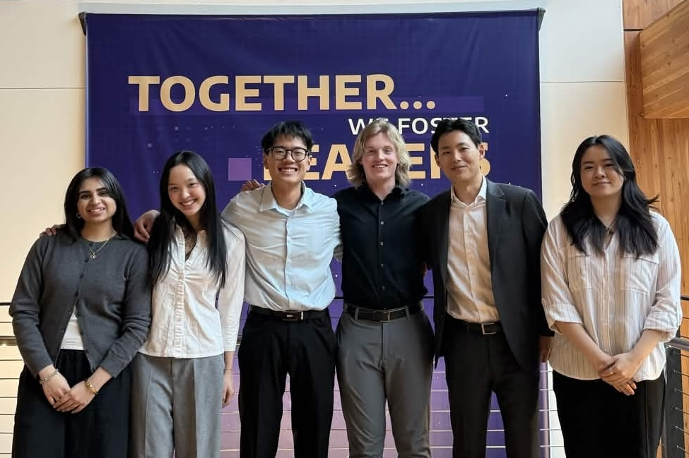
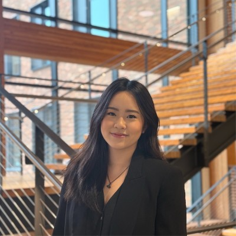
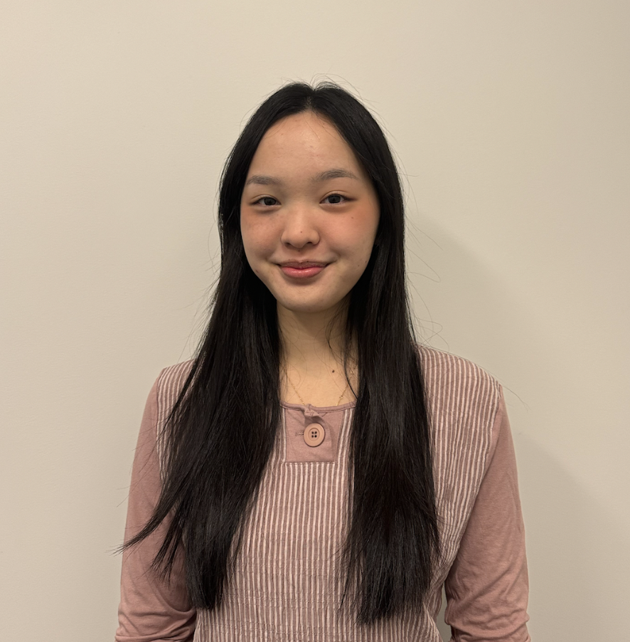

Caleb West
CEO
A proven student leader with hands-on experience in product design, Caleb's passion as a playing card collector sparked the idea behind Montlake Card Co.
Montlake Card Co was born out of a shared love for the University of Washington and a desire to create something tangible that captures the essence of Husky life. Our project consists of a full deck of 52 uniquely designed playing cards, each one celebrating a different facet of UW culture, history, and campus life.
From the cherry blossoms in the Quad to the roar of Husky Stadium, every card in our deck tells a piece of the UW story. We've poured countless hours into the design, illustration, and production process to deliver a product that Huskies everywhere will treasure.

A proven student leader with hands-on experience in product design, Caleb's passion as a playing card collector sparked the idea behind Montlake Card Co.
An award-winning student leader who has spearheaded large-scale initiatives and cross-sector partnerships at UW, Junseo brings both operational expertise and a personal love for playing cards.
Kevin brings experience in asset management and financial consulting through academics and nonprofit work, having partnered with businesses on financial strategy and deals.
A full-stack developer with a background in UI/UX, Nandini has deployed multiple high-impact projects and leads the technical vision for Montlake Card Co.

With interdisciplinary experience in product management, data science, and user-centered design, Prim leads the development and refinement of the Montlake Card Co deck.

Thane leads marketing and brand strategy for Montlake Card Co, driving awareness and growth across the UW community and beyond.
To develop the card designs, our team partnered with Sydney, a University of Washington student and watercolor artist. Sydney was selected because her watercolor style captures the vibrant aesthetic associated with the UW campus, particularly the seasonal cherry blossoms and historic architecture. Working with a student artist also aligns with our goal of supporting local creativity within the UW community.